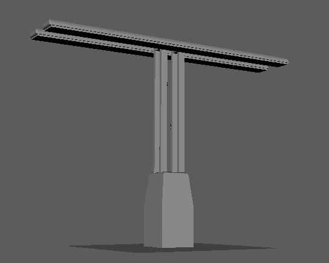
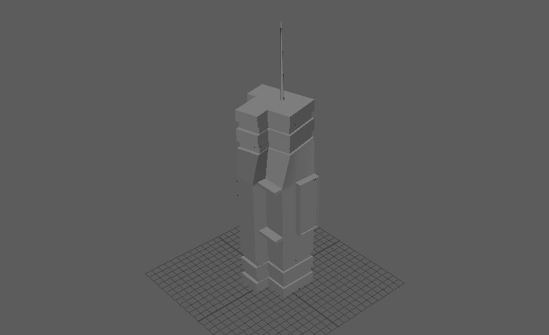

Selected project
Modeling and animation studies
The modeling process included troubleshooting rendering and geometry issues caused by skewed faces and vertices. I also learned to work with Maya's animation tools, adjusting keyframes and frame rate so animations could be viewed at a useful pace. Models were scaled in Unity as needed after export.


